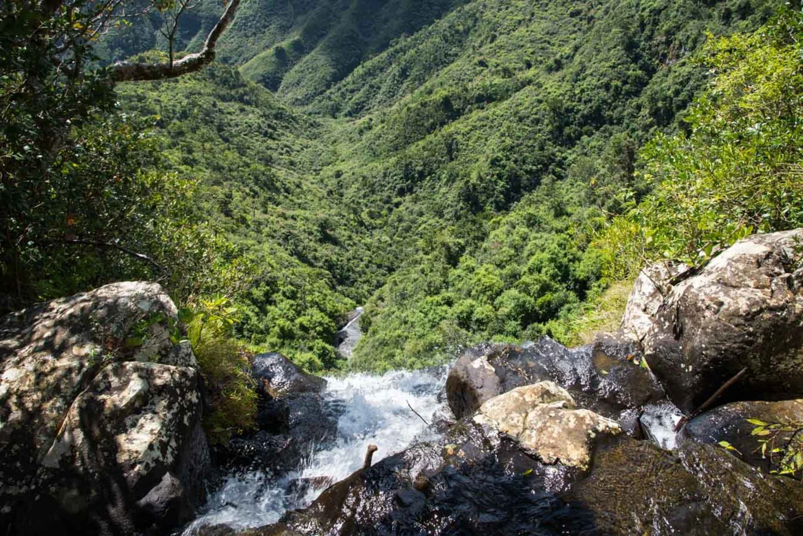
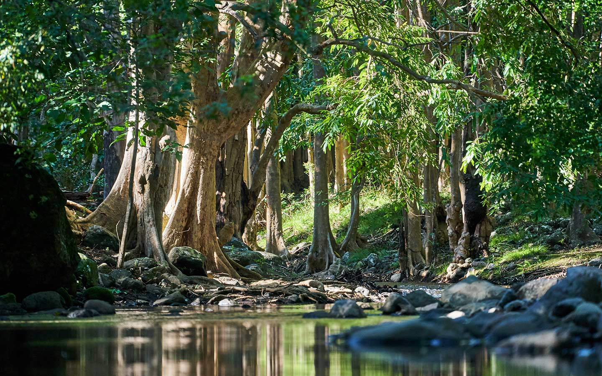
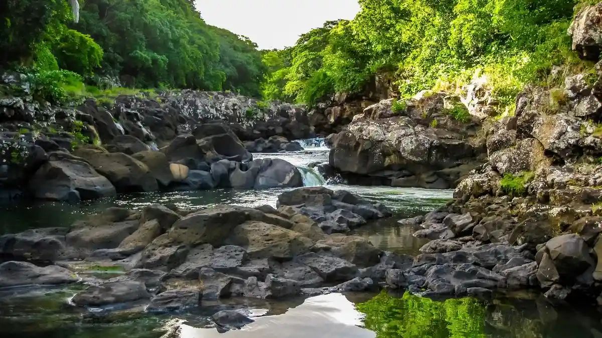
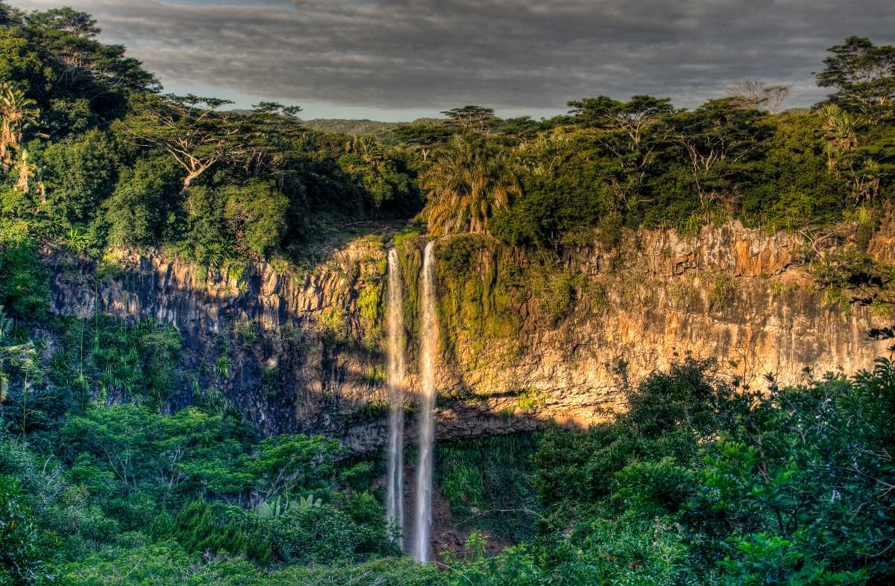

Nature's Wilderness – The Heart of Mauritius
Black River Gorges National Park is a vast and breathtaking forest reserve located in the southwestern region of Mauritius. Spanning more than 6,500 hectares, it serves as the island's largest protected area and a vital sanctuary for rare endemic plants and wildlife found nowhere else on Earth. The park is especially famous for its unique bird species, native ebony trees, and dense tropical vegetation that highlight Mauritius's natural heritage. Visitors can wander along scenic hiking trails that wind through deep valleys, cross rivers, and lead to cascading waterfalls hidden within the forest.
Scenic Views



